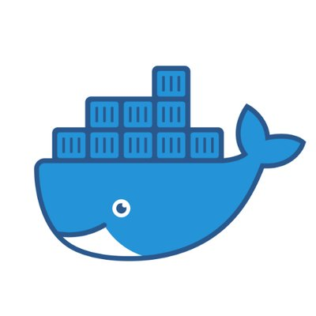
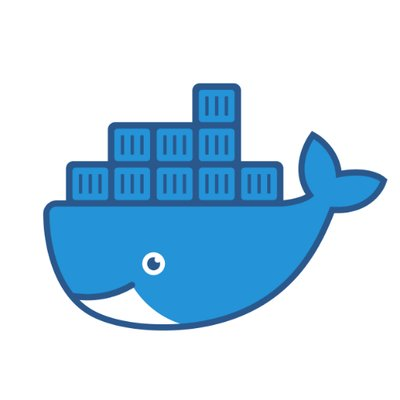
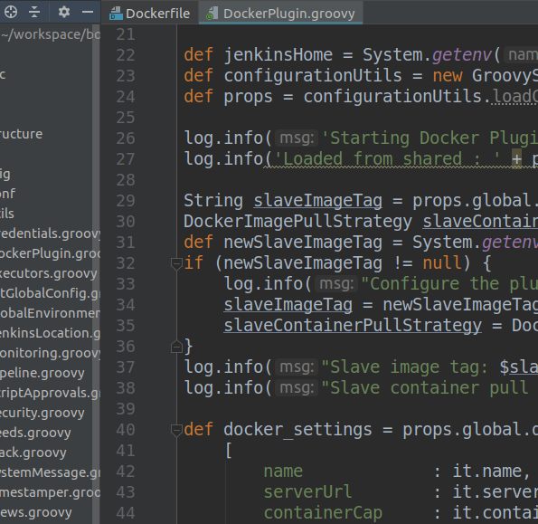
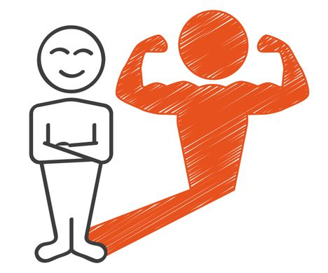
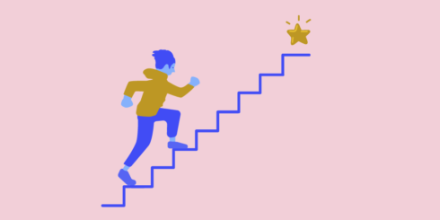

Laissez les artisans faire leur travail...
Problématique
Actions menées
### Groupe de volontaires auto-constitué
### Auto-gestion de nos outils et technologies
 

Propriétaires du code et de sa qualité


### Motivation et volonté de bien faire

### Revue de code des PR en commun
Ce que ça a changé
A retenir
Merci pour votre attention

bonitasoft.com/career

Emmanuel Duchastenier
Développeur R&D
Bémols
* Maintenance en // des 2 CIs: pas l'idéal, mais nécessaire pour la transition
* Sur certaines périodes peu d'avancement
* From scratch, ça ne s'applique pas à tous les cas, mais à des projets au périmètre limité